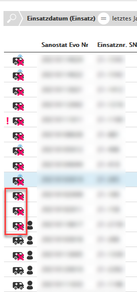
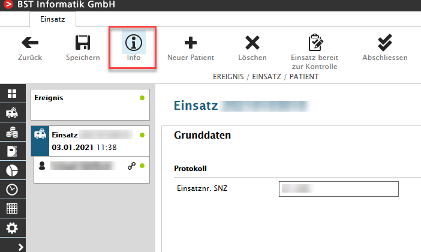
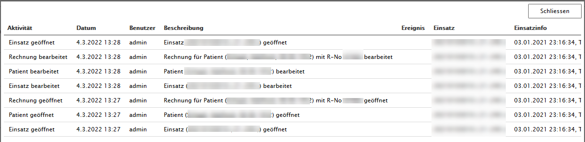
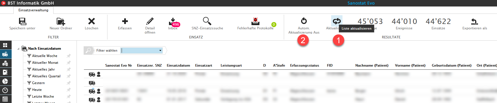
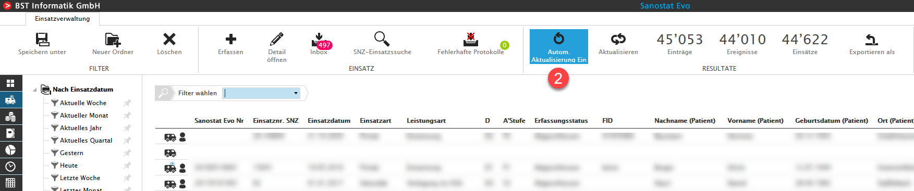
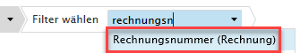
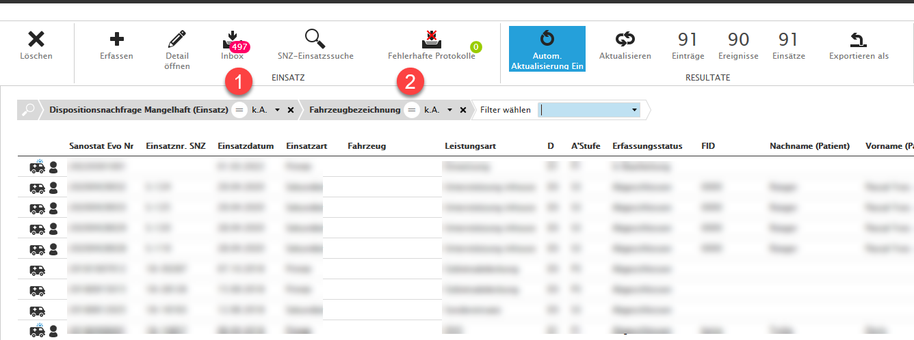
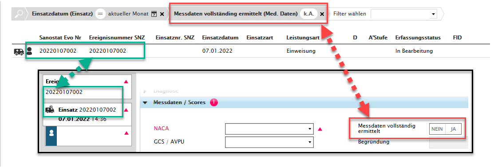

What's New in V1.23.x
Einsatzabbruch visualisiert dargestellt
Ab der Version V1.23.x wird ein Einsatzabbruch in der Einsatzverwaltung visualisiert.

Funktionales Log 'Info'
In der Erfassungsmaske werden über den Button 'Info' sämtliche Aktivitäten gelogged.
 
Neue Lizenz 'Fakturierung_QR'
Gerne stellen wir Ihnen ein Angebot für die Umstellung von 'Fakturierung_ESR' auf 'Fakturierung_QR' zu.
Neues Modul - QM
Ab dieser Version steht das kostenfplichtige Modul 'Qualitätssicherung' zur Verfügung, siehe Qualitätssicherung
Einsatzerfassung - 'Automatische Aktualisierung' der Resultate
Ab der Version V1.23.x wird das Grid in der Einsatzverwaltung nicht mehr automatisch aktualisert. Beim Button (1) 'RESULTATE Aktualisieren', können Sie die 'Aktualisierung' manuell durchführen.
Sobald Sie den Button (2) 'Autom. Aktualisierung' auf 'Ein' stellen wird die Aktualisierung automatisch durchgeführt, wie in den vorherigen Versionen von Sanostat Evo.


FlexSelect - Nummer (Rechnung) ist in Rechnungsnummer umbenannt worden

FlexSelect - 'k.A.' Suche (Leereinträge) in ComboBox wird unterstützt
Leereinträge in ComboBoxen finden Sie neu mittells FlexSelet Eingabe 'k.A.', siehe auch Leer-Einträge (k.A.) in ComboBoxen
(1) ComboBox Einfachauswahl (2) ComboBox Mehrfachauswahl

FlexSelect - 'k.A.' Filter bei Boolean Felder implementiert
Sämtliche Boolean Felder können neu gefiltert werden, wenn nichts erfasst worden ist, also kein true oder false.
WICHTIG: Beim Anklicken von = zu ≠ und dann zu k.A. navigieren.
